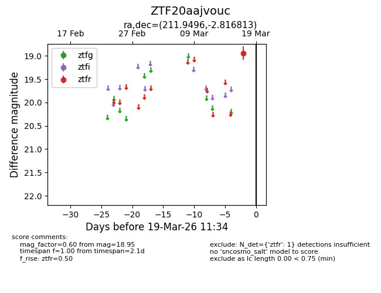
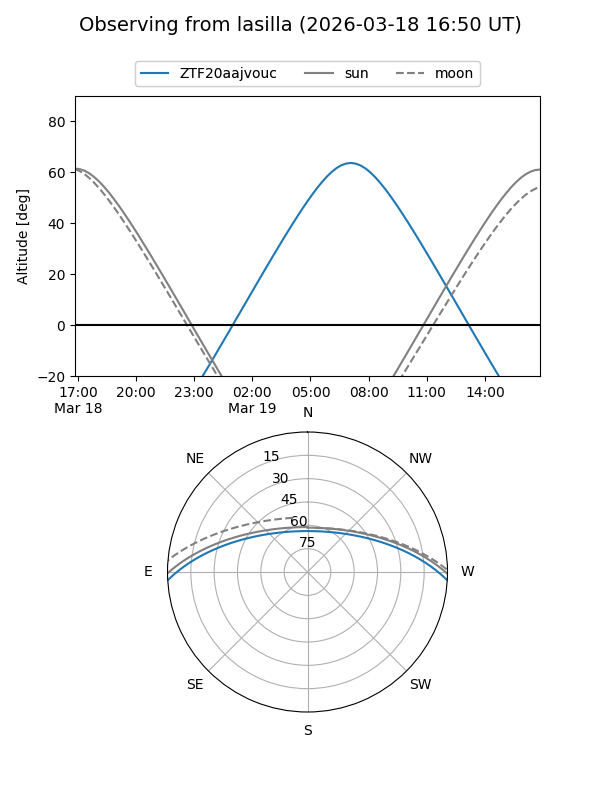
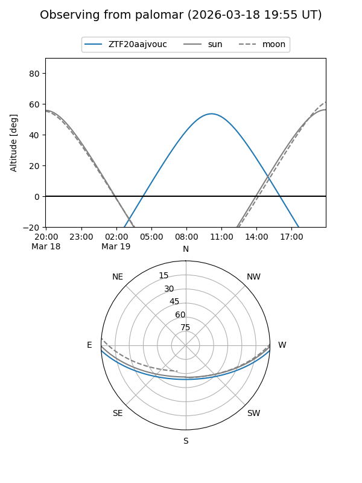

ZTF20aajvouc
Target ZTF20aajvouc at 2026-03-19 11:36
Aliases and brokers:
FINK: link
Lasair: link
ALeRCE: link
alt names
ZTF20aajvouc (ztf,fink_ztf)
Coordinates:
equatorial (ra, dec) = 211.9496,-2.81681
equatorial (HMS+DMS) = 14:07:47.89,-02:49:00.53
galactic (l, b) = (337.4978,+54.84717)
Flags:
Photometry:
last ztfr=18.95
1 ztfr detections
Lightcurve

Visibility


Additional plots